Customizing Qt Labs Controls
Qt Labs Controls consist of a hierarchy (tree) of items. In order to provide a custom look and feel, the default QML implementation of each item can be replaced with a custom one. The following snippets present the default implementations of various items. These can be used as a starting point to implement a custom look and feel.
Customizing BusyIndicator
BusyIndicator consists of two visual items: background and contentItem.
Background
BusyIndicator has no background item by default.
Content item
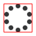
contentItem: BusyRing { id: ring implicitWidth: 48 implicitHeight: 48 opacity: control.running ? 1 : 0 Behavior on opacity { OpacityAnimator { duration: 250 } } BusyRingAnimator { target: ring running: control.visible && control.running } }
Customizing Button
Button consists of two visual items: background and label.
Background
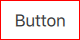
background: Rectangle { implicitWidth: 100 implicitHeight: 40 opacity: enabled ? 1 : 0.3 color: control.pressed ? (control.highlighted ? "#585a5c" : "#e4e4e4") : (control.highlighted ? "#353637" : "#f6f6f6") border.color: control.pressed ? "#26282a" : "#353637" }
Label
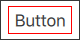
label: Text { x: control.leftPadding y: control.topPadding width: control.availableWidth height: control.availableHeight text: control.text font: control.font opacity: enabled || highlighted ? 1 : 0.3 color: control.highlighted ? "#ffffff" : (control.pressed ? "#26282a" : "#353637") horizontalAlignment: Text.AlignHCenter verticalAlignment: Text.AlignVCenter elide: Text.ElideRight }
Customizing CheckBox
CheckBox consists of three visual items: background, label and indicator.
Background
CheckBox has no background item by default.
Label
label: Text { x: control.mirrored ? control.leftPadding : (indicator.x + indicator.width + control.spacing) y: control.topPadding width: control.availableWidth - indicator.width - control.spacing height: control.availableHeight text: control.text font: control.font color: control.pressed ? "#26282a" : "#353637" elide: Text.ElideRight visible: control.text horizontalAlignment: Text.AlignLeft verticalAlignment: Text.AlignVCenter }
Indicator
indicator: Rectangle { implicitWidth: 28 implicitHeight: 28 x: text ? (control.mirrored ? control.width - width - control.rightPadding : control.leftPadding) : control.leftPadding + (control.availableWidth - width) / 2 y: control.topPadding + (control.availableHeight - height) / 2 color: control.enabled ? (control.pressed ? "#e4e4e4" : "#f6f6f6") : "#353637" border.color: control.enabled ? (control.pressed ? "#26282a" : "#353637") : "transparent" Image { x: (parent.width - width) / 2 y: (parent.height - height) / 2 source: "qrc:/qt-project.org/imports/Qt/labs/controls/images/check.png" visible: control.checkState === Qt.Checked } Rectangle { x: (parent.width - width) / 2 y: (parent.height - height) / 2 width: 16 height: 3 color: "#353637" visible: control.checkState === Qt.PartiallyChecked } }
Customizing ComboBox
ComboBox consists of background, content item, popup, and delegate.
Background
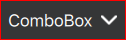
background: Item { implicitWidth: 120 implicitHeight: 40 Rectangle { width: parent.width height: parent.height opacity: control.enabled ? 1.0 : 0.2 color: control.pressed || popup.visible ? "#585A5C" : "#353637" } Image { x: parent.width - width - control.rightPadding y: (parent.height - height) / 2 source: "qrc:/qt-project.org/imports/Qt/labs/controls/images/drop-indicator.png" } }
Content item
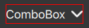
contentItem: Text { text: control.displayText font: control.font color: "#ffffff" horizontalAlignment: Text.AlignLeft verticalAlignment: Text.AlignVCenter elide: Text.ElideRight rightPadding: 18 + control.spacing }
Popup
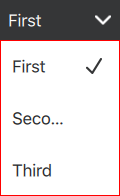
popup: T.Popup { y: control.height - 1 implicitWidth: control.width implicitHeight: listview.contentHeight topMargin: 6 bottomMargin: 6 contentItem: ListView { id: listview clip: true model: control.popup.visible ? control.delegateModel : null currentIndex: control.highlightedIndex Rectangle { z: 10 parent: listview width: listview.width height: listview.height border.color: "#353637" color: "transparent" } T.ScrollIndicator.vertical: ScrollIndicator { } } background: Rectangle { } }
Delegate
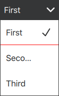
delegate: ItemDelegate { width: control.width text: control.textRole ? (Array.isArray(control.model) ? modelData[control.textRole] : model[control.textRole]) : modelData checkable: true autoExclusive: true checked: control.currentIndex === index highlighted: control.highlightedIndex === index pressed: highlighted && control.pressed }
Customizing Dial
Dial consists of two visual items: background and handle.
Background
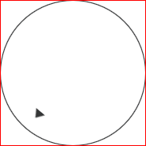
background: Rectangle { x: control.width / 2 - width / 2 y: control.height / 2 - height / 2 width: Math.max(64, Math.min(control.width, control.height)) height: Math.max(64, Math.min(control.width, control.height)) radius: width / 2 border.color: "#353637" }
Indicator
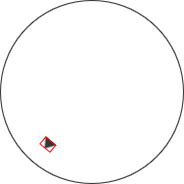
handle: Image { id: handleItem x: background.x + background.width / 2 - handle.width / 2 y: background.y + background.height / 2 - handle.height / 2 width: 14 height: 10 source: "qrc:/qt-project.org/imports/Qt/labs/controls/images/dial-indicator.png" antialiasing: true transform: [ Translate { y: -background.height * 0.4 + handle.height / 2 }, Rotation { angle: control.angle origin.x: handle.width / 2 origin.y: handle.height / 2 } ] }
Customizing Drawer
Drawer can have a visual background item. The navigation is implemented by the content item.
Background
Content item
Drawer has no content item by default.
Customizing Frame
Frame consists of two visual items: background and frame.
Background
Frame has no background item by default.
Frame

frame: Rectangle { width: parent.width height: parent.height color: "transparent" border.color: "#bdbebf" }
Customizing GroupBox
GroupBox consists of three visual items: background, frame and label.
Background
GroupBox has no background item by default.
Frame
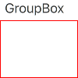
frame: Rectangle { y: control.topPadding - control.padding width: parent.width height: parent.height - control.topPadding + control.padding color: "transparent" border.color: "#bdbebf" }
Label
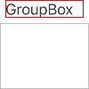
label: Text { x: control.leftPadding width: control.availableWidth text: control.title font: control.font color: control.enabled ? "#353637" : "#bdbebf" elide: Text.ElideRight horizontalAlignment: Text.AlignLeft verticalAlignment: Text.AlignVCenter }
Customizing ItemDelegate
ItemDelegate consists of three visual items: background, label and indicator. The indicator is only visible for checkable items.
Background
background: Rectangle { implicitWidth: 100 implicitHeight: 40 visible: control.pressed || control.highlighted color: control.pressed ? "#bdbebf" : "#eeeeee" }
Label
label: Text { x: control.mirrored ? control.width - width - control.rightPadding : control.leftPadding y: control.topPadding width: control.availableWidth - (control.checkable ? indicator.width + control.spacing : 0) height: control.availableHeight text: control.text font: control.font color: control.enabled ? "#26282a" : "#bdbebf" elide: Text.ElideRight visible: control.text horizontalAlignment: Text.AlignLeft verticalAlignment: Text.AlignVCenter }
Indicator
indicator: Image { x: control.mirrored ? control.leftPadding : control.width - width - control.rightPadding y: control.topPadding + (control.availableHeight - height) / 2 visible: control.checked source: control.checkable ? "qrc:/qt-project.org/imports/Qt/labs/controls/images/check.png" : "" }
Customizing Label
Label can have a visual background item.
Background
Label has no background item by default.
Customizing Menu
Menu consists of a contentItem.
Content item
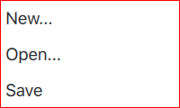
contentItem: ListView { implicitHeight: contentHeight model: control.contentModel // TODO: improve this? interactive: ApplicationWindow.window ? contentHeight > ApplicationWindow.window.height : false clip: true keyNavigationWraps: false currentIndex: -1 ScrollIndicator.vertical: ScrollIndicator {} }
Customizing MenuItem
MenuItem can be customized in the same manner as Button.
Customizing PageIndicator
TODO
Customizing Pane
Pane consists of a background.
Background
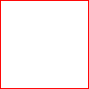
background: Rectangle { color: "#ffffff" }
Customizing ProgressBar
ProgressBar consists of two visual items: background and indicator.
Background
background: Rectangle { implicitWidth: 200 implicitHeight: 6 x: control.leftPadding y: control.topPadding + (control.availableHeight - height) / 2 width: control.availableWidth height: 6 color: "#e4e4e4" }
Indicator
indicator: ProgressStrip { id: strip x: control.leftPadding y: control.topPadding + (control.availableHeight - height) / 2 width: control.availableWidth height: 6 scale: control.mirrored ? -1 : 1 progress: control.position indeterminate: control.indeterminate ProgressStripAnimator { target: strip running: control.visible && control.indeterminate } }
Customizing RadioButton
RadioButton consists of three visual items: background, label and indicator.
Background
RadioButton has no background item by default.
Label
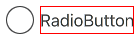
label: Text { x: control.mirrored ? control.leftPadding : (indicator.x + indicator.width + control.spacing) y: control.topPadding width: control.availableWidth - indicator.width - control.spacing height: control.availableHeight text: control.text font: control.font color: control.pressed ? "#26282a" : "#353637" elide: Text.ElideRight visible: control.text horizontalAlignment: Text.AlignLeft verticalAlignment: Text.AlignVCenter }
Indicator
indicator: Rectangle { implicitWidth: 28 implicitHeight: 28 x: text ? (control.mirrored ? control.width - width - control.rightPadding : control.leftPadding) : control.leftPadding + (control.availableWidth - width) / 2 y: control.topPadding + (control.availableHeight - height) / 2 radius: width / 2 border.width: 1 border.color: (control.pressed ? "#26282a" : "#353637") color: control.pressed ? "#e4e4e4" : "#f6f6f6" Rectangle { x: (parent.width - width) / 2 y: (parent.height - height) / 2 width: 20 height: 20 radius: width / 2 color: control.pressed ? "#26282a" : "#353637" visible: control.checked } }
Customizing RangeSlider
RangeSlider consists of four visual items: background, track, first.handle and second.handle.
Background
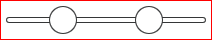
RangeSlider has no background item by default.
Track
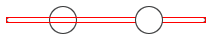
track: Rectangle { x: control.leftPadding + (horizontal ? 0 : (control.availableWidth - width) / 2) y: control.topPadding + (horizontal ? (control.availableHeight - height) / 2 : 0) implicitWidth: horizontal ? 200 : 6 implicitHeight: horizontal ? 6 : 200 width: horizontal ? control.availableWidth : implicitWidth height: horizontal ? implicitHeight : control.availableHeight radius: 3 border.color: "#353637" color: "#ffffff" scale: horizontal && control.mirrored ? -1 : 1 readonly property bool horizontal: control.orientation === Qt.Horizontal }
First Handle
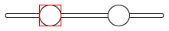
first.handle: Rectangle { x: control.leftPadding + (horizontal ? control.first.visualPosition * (control.availableWidth - width) : (control.availableWidth - width) / 2) y: control.topPadding + (horizontal ? (control.availableHeight - height) / 2 : control.first.visualPosition * (control.availableHeight - height)) implicitWidth: 28 implicitHeight: 28 radius: width / 2 border.width: activeFocus ? 2 : 1 border.color: "#353637" color: first.pressed ? "#bdbebf" : "#ffffff" readonly property bool horizontal: control.orientation === Qt.Horizontal }
Second Handle
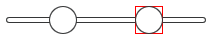
second.handle: Rectangle { x: control.leftPadding + (horizontal ? control.second.visualPosition * (control.availableWidth - width) : (control.availableWidth - width) / 2) y: control.topPadding + (horizontal ? (control.availableHeight - height) / 2 : control.second.visualPosition * (control.availableHeight - height)) implicitWidth: 28 implicitHeight: 28 radius: width / 2 border.width: activeFocus ? 2 : 1 border.color: "#353637" color: second.pressed ? "#bdbebf" : "#ffffff" readonly property bool horizontal: control.orientation === Qt.Horizontal }
Customizing ScrollBar
ScrollBar consists of two visual items: background and handle.
Background
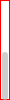
ScrollBar has no background item by default.
Handle
handle: Rectangle { id: handle implicitWidth: 6 implicitHeight: 6 radius: width / 2 color: control.pressed ? "#28282a" : "#bdbebf" visible: control.size < 1.0 opacity: 0.0 readonly property bool horizontal: control.orientation === Qt.Horizontal x: control.leftPadding + (horizontal ? control.position * control.availableWidth : 0) y: control.topPadding + (horizontal ? 0 : control.position * control.availableHeight) width: horizontal ? control.size * control.availableWidth : implicitWidth height: horizontal ? implicitHeight : control.size * control.availableHeight states: State { name: "active" when: control.active PropertyChanges { target: handle; opacity: 0.75 } } transitions: Transition { from: "active" SequentialAnimation { PauseAnimation { duration: 450 } NumberAnimation { target: handle; duration: 200; property: "opacity"; to: 0.0 } } } }
Customizing ScrollIndicator
ScrollIndicator consists of two visual items: background and indicator.
Background
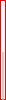
ScrollIndicator has no background item by default.
Indicator
indicator: Rectangle { id: indicator implicitWidth: 2 implicitHeight: 2 color: "#bdbebf" visible: control.size < 1.0 opacity: 0.0 readonly property bool horizontal: control.orientation === Qt.Horizontal x: control.leftPadding + (horizontal ? control.position * control.width : 0) y: control.topPadding + (horizontal ? 0 : control.position * control.height) width: horizontal ? control.size * control.availableWidth : implicitWidth height: horizontal ? implicitHeight : control.size * control.availableHeight states: State { name: "active" when: control.active PropertyChanges { target: indicator; opacity: 0.75 } } transitions: [ Transition { from: "active" SequentialAnimation { PauseAnimation { duration: 450 } NumberAnimation { target: indicator; duration: 200; property: "opacity"; to: 0.0 } } } ] }
Customizing Slider
Slider consists of three visual items: background, track and handle.
Background
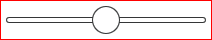
Slider has no background item by default.
Track
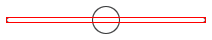
track: Rectangle { x: control.leftPadding + (horizontal ? 0 : (control.availableWidth - width) / 2) y: control.topPadding + (horizontal ? (control.availableHeight - height) / 2 : 0) implicitWidth: horizontal ? 200 : 6 implicitHeight: horizontal ? 6 : 200 width: horizontal ? control.availableWidth : implicitWidth height: horizontal ? implicitHeight : control.availableHeight radius: 3 border.color: "#353637" color: "#ffffff" scale: horizontal && control.mirrored ? -1 : 1 readonly property bool horizontal: control.orientation === Qt.Horizontal }
Handle
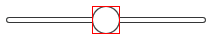
handle: Rectangle { x: control.leftPadding + (horizontal ? control.visualPosition * (control.availableWidth - width) : (control.availableWidth - width) / 2) y: control.topPadding + (horizontal ? (control.availableHeight - height) / 2 : control.visualPosition * (control.availableHeight - height)) implicitWidth: 28 implicitHeight: 28 radius: width / 2 border.color: "#353637" color: control.pressed ? "#bdbebf" : "#f6f6f6" readonly property bool horizontal: control.orientation === Qt.Horizontal }
Customizing SpinBox
SpinBox consists of four visual items: background, contentItem, up indicator, and down indicator.
Background
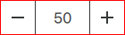
background: Rectangle { implicitWidth: 140 border.color: "#bdbebf" }
Content item
contentItem: TextInput { text: control.textFromValue(control.value, control.locale) font: control.font color: "#353637" selectionColor: "#fddd5c" selectedTextColor: color horizontalAlignment: Qt.AlignHCenter verticalAlignment: Qt.AlignVCenter validator: control.validator inputMethodHints: Qt.ImhFormattedNumbersOnly }
Down indicator
down.indicator: Rectangle { x: control.mirrored ? parent.width - width : 0 height: parent.height implicitWidth: 40 implicitHeight: 40 color: down.pressed ? "#e4e4e4" : "#f6f6f6" border.color: control.enabled ? "#353637" : "#bdbebf" Rectangle { x: (parent.width - width) / 2 y: (parent.height - height) / 2 width: parent.width / 3 height: 2 color: control.enabled ? "#353637" : "#bdbebf" } }
Up indicator
up.indicator: Rectangle { x: control.mirrored ? 0 : parent.width - width height: parent.height implicitWidth: 40 implicitHeight: 40 color: up.pressed ? "#e4e4e4" : "#f6f6f6" border.color: control.enabled ? "#353637" : "#bdbebf" Rectangle { x: (parent.width - width) / 2 y: (parent.height - height) / 2 width: parent.width / 3 height: 2 color: control.enabled ? "#353637" : "#bdbebf" } Rectangle { x: (parent.width - width) / 2 y: (parent.height - height) / 2 width: 2 height: parent.width / 3 color: control.enabled ? "#353637" : "#bdbebf" } }
Customizing StackView
StackView can have a visual background item, and it allows customizing the transitions that are used for push, pop, and replace operations.
Push enter
pushEnter: Transition { XAnimator { from: (root.mirrored ? -1 : 1) * root.width; to: 0; duration: 400; easing.type: Easing.OutCubic } }
Push exit
pushExit: Transition { XAnimator { from: 0; to: (root.mirrored ? -1 : 1) * -root.width; duration: 400; easing.type: Easing.OutCubic } }
Pop enter
popEnter: Transition { XAnimator { from: (root.mirrored ? -1 : 1) * -root.width; to: 0; duration: 400; easing.type: Easing.OutCubic } }
Pop exit
popExit: Transition { XAnimator { from: 0; to: (root.mirrored ? -1 : 1) * root.width; duration: 400; easing.type: Easing.OutCubic } }
Replace enter
replaceEnter: Transition { XAnimator { from: (root.mirrored ? -1 : 1) * root.width; to: 0; duration: 400; easing.type: Easing.OutCubic } }
Replace exit
replaceExit: Transition { XAnimator { from: 0; to: (root.mirrored ? -1 : 1) * -root.width; duration: 400; easing.type: Easing.OutCubic } }
Customizing SwipeView
SwipeView can have a visual background item. The navigation is implemented by the content item.
Background
SwipeView has no background item by default.
Content item
contentItem: ListView { model: control.contentModel currentIndex: control.currentIndex spacing: control.spacing orientation: Qt.Horizontal snapMode: ListView.SnapOneItem boundsBehavior: Flickable.StopAtBounds highlightRangeMode: ListView.StrictlyEnforceRange preferredHighlightBegin: 0 preferredHighlightEnd: 0 highlightMoveDuration: 250 }
Customizing Switch
Switch consists of three visual items: background, label and indicator.
Background
Switch has no background item by default.
Label
label: Text { x: control.mirrored ? control.leftPadding : (indicator.x + indicator.width + control.spacing) y: control.topPadding width: control.availableWidth - indicator.width - control.spacing height: control.availableHeight text: control.text font: control.font color: control.enabled ? "#26282a" : "#bdbebf" elide: Text.ElideRight visible: control.text horizontalAlignment: Text.AlignLeft verticalAlignment: Text.AlignVCenter }
Indicator
indicator: Item { x: text ? (control.mirrored ? control.width - width - control.rightPadding : control.leftPadding) : control.leftPadding + (control.availableWidth - width) / 2 y: control.topPadding + (control.availableHeight - height) / 2 implicitWidth: 56 implicitHeight: 28 Rectangle { y: parent.height / 2 - height / 2 width: 56 height: 16 radius: 8 border.width: 1 color: control.checked ? "#353637" : "transparent" border.color: control.checked ? "transparent" : "#353637" } Rectangle { x: Math.max(0, Math.min(parent.width - width, control.visualPosition * parent.width - (width / 2))) y: (parent.height - height) / 2 width: 28 height: 28 radius: 16 color: control.pressed ? "#e4e4e4" : "#f6f6f6" border.width: 1 border.color: control.pressed ? "#26282a" : "#353637" Behavior on x { enabled: !control.pressed SmoothedAnimation { velocity: 200 } } } }
Customizing TabBar
TODO
Customizing TabButton
TODO
Customizing TextArea
TODO
Customizing TextField
TextField offers a customizable background item.
Background
background: Rectangle { implicitWidth: 200 implicitHeight: 40 // border.width: control.activeFocus ? 2 : 1 color: control.enabled ? "transparent" : "#353637" border.color: control.enabled ? "#bdbebf" : "transparent" }
Customizing ToolBar
ToolBar consists of two visual items: background and frame.
Background

background: Rectangle { implicitHeight: 40 color: "#eeeeee" }
Frame
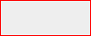
ToolBar has no frame item by default.
Customizing ToolButton
ToolButton consists of two visual items: background and label.
Background
background: Rectangle { implicitWidth: 40 implicitHeight: 40 color: Qt.darker("#33333333", control.enabled && (control.checked || control.highlighted) ? 1.5 : 1.0) opacity: control.pressed ? 1.0 : control.enabled && (control.checked || control.highlighted) ? 0.5 : 0 visible: control.pressed || (control.enabled && (control.checked || control.highlighted)) }
Label
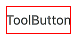
label: Text { x: control.leftPadding y: control.topPadding width: control.availableWidth height: control.availableHeight text: control.text font: control.font color: control.enabled ? "#26282a" : "#c2c2c2" elide: Text.ElideRight horizontalAlignment: Text.AlignHCenter verticalAlignment: Text.AlignVCenter }
Customizing Tumbler
Tumbler consists of three visual items: background, contentItem, and delegate.
Background
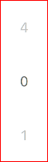
Tumbler has no background item by default.
Content Item

contentItem: PathView { id: pathView model: control.model delegate: control.delegate clip: true pathItemCount: control.visibleItemCount + 1 preferredHighlightBegin: 0.5 preferredHighlightEnd: 0.5 dragMargin: width / 2 path: Path { startX: pathView.width / 2 startY: -pathView.delegateHeight / 2 PathLine { x: pathView.width / 2 y: pathView.pathItemCount * pathView.delegateHeight - pathView.delegateHeight / 2 } } property real delegateHeight: control.availableHeight / control.visibleItemCount }
Delegate
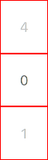
delegate: Text { id: label text: modelData color: "#666666" font: control.font opacity: 0.4 + Math.max(0, 1 - Math.abs(Tumbler.displacement)) * 0.6 horizontalAlignment: Text.AlignHCenter verticalAlignment: Text.AlignVCenter }